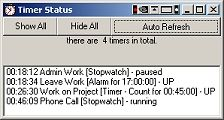

Features
Customer Feedback
it's just what I was looking for!I looked at some other timer programs and liked yours the best. Will register now.
Duncan, You are a miracle worker! Thanks so much for the quick solution! The "Timer" is wonderful!
The more I use the program, the more I see uses for it, and the more I like it.

$59.95 US
The professional version of Acute Softwares Timer gives you all the benefits of the standard Timer with the following extras:
Includes all the Standard Timer Features
Advanced Features
Even though the Timer is very easy to use, there are many advanced features to turn this into a powerful timer management tool. The image on the right shows the Timer status window. You can open this window by clicking the Timer caption bar, or choosing 'Timer Manager' from the File menu.
It shows up all the current timers, including their type and whether they are running, paused or Finished.
You can manage timers individually (from the Timers menu - click anywhere on the caption), or as a group from the Timer Status window or from the Timer menu on the main screen.
Any timer can be saved into the Favourites menu to be reused at any time, and you can even set it to automatically reload all previously running timers when the program starts. This is great for timing long term tasks.
Registered customers get FREE email support, and access to the registered customers area where they can download all new updates to the program.